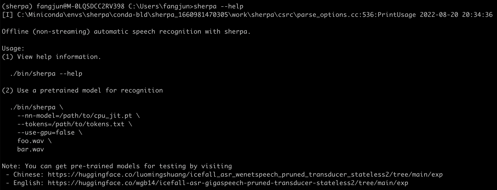

conda for Windows
Note
We recommend creating a new virtual environment to install sherpa.
Hint
At present, we only provide CPU version of pre-built conda packages for
Windows. If you want to use a CUDA version of sherpa, please consider
installing sherpa from source.
The command to install sherpa for Windows using conda is:
conda install \
-c k2-fsa \
-c k2-fsa-sherpa \
-c kaldifeat \
-c kaldi_native_io \
-c pytorch \
k2 \
sherpa \
kaldifeat \
kaldi_native_io \
pytorch=1.12.0 \
python=3.8
or the following command in one line:
conda install -c k2-fsa -c k2-fsa-sherpa -c kaldifeat -c kaldi_native_io -c pytorch k2 sherpa kaldifeat kaldi_native_io pytorch=1.12.0 python=3.8
Caution
It is of paramount importance that you specify the -c options while
installing sherpa. Otherwise, you will be SAD.
You can switch the orders of different options for -c, but you cannot
omit them.
We provide pre-built conda packages for Python >= 3.7 and PyTorch >= 1.6.0.
Please consider installing sherpa from source if you have other requirements.
You can use:
conda search -c k2-fsa-sherpa sherpa
to check all available sherpa packages for different combinations of
Python and PyTorch. A sample output of the above command is listed below:
Loading channels: done
# Name Version Build Channel
sherpa 0.6 cpu_py3.10_torch1.11.0 k2-fsa-sherpa
sherpa 0.6 cpu_py3.10_torch1.12.0 k2-fsa-sherpa
sherpa 0.6 cpu_py3.10_torch1.12.1 k2-fsa-sherpa
sherpa 0.6 cpu_py3.7_torch1.10.0 k2-fsa-sherpa
sherpa 0.6 cpu_py3.7_torch1.10.1 k2-fsa-sherpa
sherpa 0.6 cpu_py3.7_torch1.10.2 k2-fsa-sherpa
sherpa 0.6 cpu_py3.7_torch1.11.0 k2-fsa-sherpa
sherpa 0.6 cpu_py3.7_torch1.12.0 k2-fsa-sherpa
sherpa 0.6 cpu_py3.7_torch1.12.1 k2-fsa-sherpa
sherpa 0.6 cpu_py3.7_torch1.8.0 k2-fsa-sherpa
sherpa 0.6 cpu_py3.7_torch1.8.1 k2-fsa-sherpa
sherpa 0.6 cpu_py3.7_torch1.9.0 k2-fsa-sherpa
Settings after installation
Suppose that you have created an environment named sherpa for installation
using the following commands:
conda create -n sherpa
conda activate sherpa
To check whether you have installed sherpa successfully or not, please run
the following command:
(sherpa) fangjun@M-0LQSDCC2RV398 C:\Users\fangjun>sherpa
'sherpa' is not recognized as an internal or external command,
operable program or batch file.
It reports that Windows cannot find the executable sherpa.exe. We have
to set the following environment variable:
(sherpa) fangjun@M-0LQSDCC2RV398 C:\Users\fangjun>set path=%conda_prefix%\lib\site-packages\sherpa\bin;%path%
After setting the path environment variable, we can run sherpa again:
(sherpa) fangjun@M-0LQSDCC2RV398 C:\Users\fangjun>sherpa
(sherpa) fangjun@M-0LQSDCC2RV398 C:\Users\fangjun>sherpa --help
(sherpa) fangjun@M-0LQSDCC2RV398 C:\Users\fangjun>
It does not complain about being not able to find sherpa.exe. However, it
prints nothing.
The reason is that sherpa.exe cannot find torch_cpu.dll. You have to
add another directory to the environment variable path using:
set path=%conda_prefix%\lib\site-packages\torch\lib;%path%
Now you can run sherpa in the commandline:
sherpa --help
You will get something like the following screenshot:

Congratulations! You have succeeded in installing sherpa on Windows.
Read Non-streaming ASR to find more.
If you have any issues about installing sherpa, please create an issue
at the following address:
Hint
If you have a WeChat account, you can scan the following QR code to join the WeChat group of next-gen Kaldi to get help.